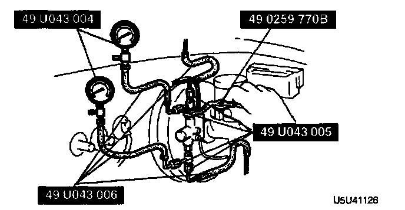
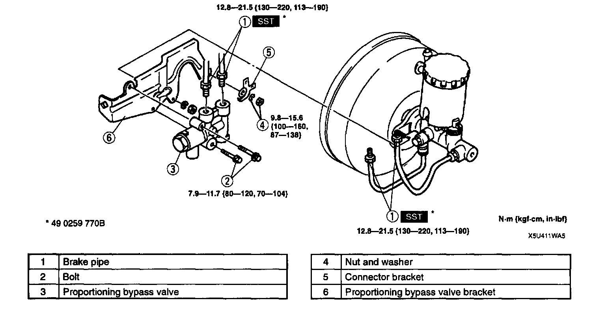

Brake Proportioning/Combination Valve: Testing and Inspection

1. Connect the Special Service Tools (SSTs) and the adapters to the brake pipes as shown in the figure.
2. Bleed the air from the brake system.

3. Measure the fluid pressure from the master cylinder and to the rear brakes. If not as specified, replace the valve component.